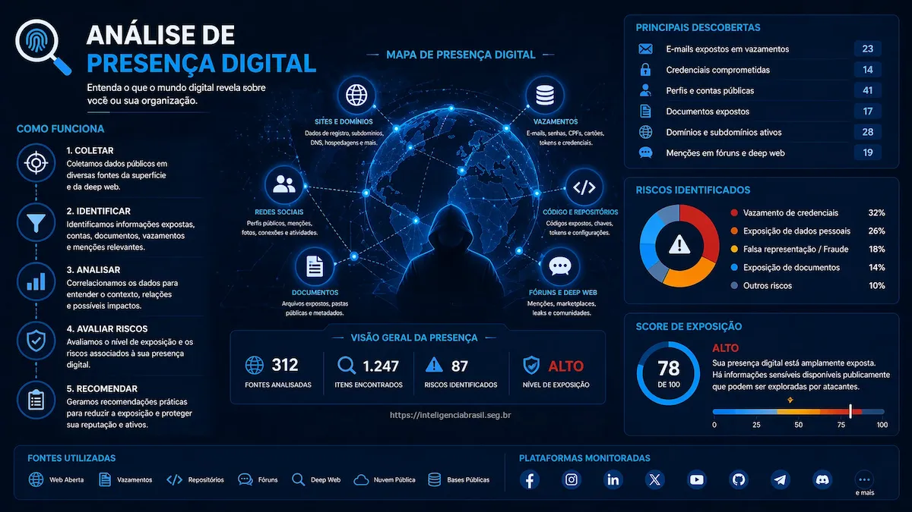

"Na era digital, sua reputação é tão vulnerável quanto seus sistemas. Quem não monitora a própria presença online entrega a narrativa para quem monitora."
Executivos, figuras públicas e organizações deixam rastros digitais em cada interação online — um cadastro em plataforma, uma menção em rede social, um domínio registrado, uma credencial vazada em um breach. Esses fragmentos, quando reunidos, formam um mapa detalhado de exposição que atacantes, fraudadores e concorrentes podem explorar antes que a vítima sequer perceba.
Análise de presença digital é o processo sistemático de identificar, catalogar e avaliar essas pegadas para transformar exposição passiva em proteção ativa. Este artigo cobre as disciplinas envolvidas, os métodos de mapeamento, os requisitos legais e a comparação técnica entre as abordagens disponíveis. Se você ainda não conhece os fundamentos da segurança da informação, recomendamos começar por lá.
O que entra na investigação e no monitoramento contínuo
Investigação digital
A investigação digital é o ponto de partida: uma varredura estruturada que identifica o estado atual da presença online de um indivíduo ou organização. Diferente de uma busca casual, a investigação segue metodologia reproduzível, documenta fontes e preserva evidências para uso posterior — seja para defesa jurídica, compliance ou decisão executiva.
- Escopo definido: Nome completo, variações, CPF/CNPJ, domínios, emails, telefones e handles de redes sociais
- Fontes estruturadas: Registros públicos (WHOIS, Receita Federal, juntas comerciais, cartórios digitais)
- Fontes não estruturadas: Buscadores, fóruns, pastebins, repositórios de código, marketplaces
- Resultado: Relatório de exposição com classificação de risco por achado
Análise de presença digital
Enquanto a investigação é pontual, a análise de presença digital avalia o contexto e o impacto de cada achado. Um perfil no LinkedIn não é risco por si só — mas se contém informações que facilitam spear phishing (cargo exato, projetos, tecnologias usadas), o risco muda.
Superfície de exposição pessoal
A análise mapeia a superfície de exposição pessoal da mesma forma que um ASM (Attack Surface Management) mapeia ativos de infraestrutura. A diferença é que o alvo são pessoas, não servidores — e o vetor de ataque é engenharia social, não exploit técnico.
Monitoramento de VIPs e PEPs
VIPs corporativos (CEOs, CFOs, membros do conselho) e PEPs (Pessoas Expostas Politicamente) são alvos preferenciais de fraudes, extorsão e ataques reputacionais. O monitoramento contínuo vai além da investigação inicial e complementa estratégias de monitoramento de ameaças cibernéticas:
- Alertas de menção: Detecção em tempo real de menções em redes sociais, notícias e fóruns
- Detecção de impersonação: Perfis falsos usando nome, foto ou cargo do VIP
- Monitoramento de vazamentos: Credenciais do VIP em bases de dados comprometidas
- Acompanhamento de domínios: Registros de domínios semelhantes (typosquatting) que podem ser usados em phishing
Rastreio e atribuição
Quando uma ameaça é identificada — um perfil falso, uma campanha de difamação, um vazamento direcionado — o rastreio busca identificar a origem. A atribuição conecta evidências técnicas (IPs, metadados, padrões de escrita, horários de atividade) a um ator ou grupo responsável. Esse processo exige rigor metodológico porque atribuição incorreta pode gerar consequências jurídicas e reputacionais severas. Técnicas de threat intelligence operacional são essenciais nessa etapa.
Atribuição não é certeza
Atribuição em ambiente digital trabalha com graus de confiança, não com provas absolutas. Atacantes usam proxies, VPNs, infraestrutura compartilhada e técnicas de false flag. Toda atribuição deve declarar explicitamente o nível de confiança e as evidências que a sustentam.
Não espere um incidente para descobrir o que já está exposto.
Mapeie sua presença digital e antecipe riscos antes que se tornem crises.
Fale com um EspecialistaComo mapear presença digital sem perder rastreabilidade
Pegadas digitais
Pegadas digitais dividem-se em ativas (criadas intencionalmente pelo usuário) e passivas (geradas automaticamente por sistemas). Ambas são relevantes para o mapeamento e impactam diretamente a proteção de dados pessoais:
Pegadas Ativas
Posts em redes sociais, comentários em fóruns, cadastros em plataformas, publicações, domínios registrados e repositórios de código
Pegadas Passivas
Registros DNS, metadados em documentos, headers de email, logs de acesso a sites, cookies de rastreamento e geolocalização em fotos
Metodologia de coleta
A coleta deve seguir uma sequência que maximize os achados sem comprometer a rastreabilidade:
- Definir selectores: Identificadores únicos do alvo (nome, email, telefone, username)
- Pivotagem: Usar cada achado como ponto de partida para descobrir novos dados
- Correlação: Cruzar informações de fontes diferentes para confirmar vínculos
- Documentação: Registrar cada passo com timestamp, URL e hash da evidência
Menções públicas
Menções em notícias, blogs, redes sociais e fóruns constroem (ou destroem) reputação. O monitoramento contínuo identifica:
- Sentimento: Menções positivas, neutras ou negativas
- Alcance: Plataformas de alto impacto vs. fóruns de nicho
- Contexto: Menções associadas a controvérsias, processos judiciais ou escândalos
- Propagação: Velocidade e padrão de compartilhamento de conteúdo negativo
Perfis falsos e impersonação
Perfis falsos são criados para aplicar golpes financeiros, disseminar desinformação ou prejudicar a reputação do alvo. A detecção envolve:
- Busca por nome e variações: Incluindo transliterações e abreviações
- Busca reversa de imagem: Identificar uso não autorizado de fotos do alvo
- Análise de perfil: Data de criação, atividade, rede de conexões, padrão de postagem
- Comparação de conteúdo: Uso de cargos, biografias e informações copiadas do perfil legítimo
Ação rápida contra impersonação
Ao identificar um perfil falso, documente imediatamente com screenshots, hashes e timestamps antes de reportar à plataforma. A remoção pode levar dias, mas a evidência preservada é essencial para eventual ação judicial ou notificação ao CERT.
Vazamentos e credenciais expostas
Bases de dados comprometidas são disponibilizadas em fóruns, dark web e Telegram diariamente. O uso de gerenciadores de senhas e autenticação passwordless reduz o impacto, mas o monitoramento continua essencial:
- Credenciais corporativas: Emails @empresa em bases vazadas (combolists, stealer logs)
- Credenciais pessoais: Emails pessoais de executivos em breaches
- Dados sensíveis: CPF, RG, endereço, dados bancários em dumps
- Stealer logs: Cookies de sessão, tokens e senhas capturados por infostealers
Regras, segurança e conformidade na coleta
Preservação de evidências
Qualquer achado que possa ser usado em processo judicial, compliance ou investigação interna precisa ser preservado de forma que garanta autenticidade e integridade. Os mesmos princípios se aplicam na resposta a incidentes:
- Screenshot com metadados: Data, hora, URL completa e resolução de tela
- Hash criptográfico: SHA-256 do arquivo de evidência no momento da captura
- Ata notarial digital: Para evidências que exigem fé pública
- Ferramentas especializadas: HTTrack, Hunchly, Wayback Machine para preservação de páginas
Cadeia de custódia
A cadeia de custódia documenta quem acessou, manipulou ou transferiu a evidência digital em cada etapa. Sem ela, a prova pode ser impugnada:
1. Coleta
Registrar quem coletou, quando, de qual fonte, com qual ferramenta e armazenar hash original
2. Armazenamento
Repositório com controle de acesso, logs de auditoria e backup redundante com verificação de integridade
3. Análise
Trabalhar em cópia forense, nunca no original. Documentar cada operação realizada sobre a evidência
4. Transferência
Registrar cada transferência entre analistas, departamentos ou para autoridades com recibo assinado
5. Apresentação
Demonstrar integridade via hash, logs de acesso e documentação completa do processo
Privacidade e autorização
A coleta de informações pessoais, mesmo de fontes públicas, deve respeitar a legislação vigente. A implementação técnica da LGPD define as bases legais aplicáveis:
- LGPD (Lei 13.709/2018): Base legal para tratamento de dados pessoais — legítimo interesse, consentimento ou cumprimento de obrigação legal
- Marco Civil da Internet (Lei 12.965/2014): Proteção de registros, dados pessoais e comunicações privadas
- Código Penal (Art. 154-A): Invasão de dispositivo informático alheio é crime — a coleta deve se limitar a fontes públicas ou autorizadas
- GDPR: Para alvos ou dados com nexo europeu, regras adicionais de consentimento e transparência
Limites legais da investigação
Acessar perfis privados, usar credenciais vazadas para login, interceptar comunicações ou criar perfis falsos para interagir com o alvo são práticas ilegais, mesmo com finalidade de proteção. A investigação legítima opera exclusivamente sobre informações acessíveis sem autenticação ou com autorização formal documentada.
Uso corporativo e objetivo jurídico
Empresas utilizam análise de presença digital em cenários específicos que definem o escopo e as limitações da coleta. A cyber due diligence em processos de M&A é um dos casos mais comuns:
| Cenário | Objetivo | Base Legal | Escopo Permitido |
|---|---|---|---|
| Due diligence | Avaliar risco de parceiros, fornecedores ou M&A | Legítimo interesse | Fontes públicas, registros comerciais, mídia |
| Proteção executiva | Monitorar ameaças a VIPs e PEPs | Legítimo interesse + consentimento | Menções públicas, perfis falsos, vazamentos |
| Investigação interna | Apurar fraude, vazamento ou má conduta | Exercício regular de direito | Dados corporativos + fontes públicas |
| Instrução processual | Coletar evidências para ação judicial | Exercício regular de direito | Fontes públicas com preservação forense |
| Compliance KYC/AML | Verificar identidade e antecedentes | Obrigação legal | Bases regulatórias, listas restritivas, PEP |
Base técnica e desempenho das verificações
OSINT — Open Source Intelligence
OSINT coleta e analisa informações de fontes abertas — qualquer dado acessível sem autenticação ou pagamento restritivo. É a base de toda análise de presença digital e se integra diretamente ao trabalho de threat hunting.
- Fontes: Buscadores (Google, Bing, Yandex), registros públicos, WHOIS, DNS, certificados SSL, arquivos web, documentos indexados
- Ferramentas: Maltego, SpiderFoot, theHarvester, Shodan, Censys, Recon-ng
- Vantagem: Ampla cobertura, baixo custo, legal por definição (fontes públicas)
- Limitação: Não acessa conteúdo privado, autenticado ou cifrado
Técnicas comuns de OSINT
- Google Dorking: Operadores avançados para localizar informações expostas (filetype:, site:, inurl:)
- Enumeração de subdomínios: Mapear infraestrutura via certificate transparency e brute force
- Metadata extraction: EXIF em imagens, propriedades de documentos Office/PDF
- Email enumeration: Hunter.io, Phonebook.cz, validação SMTP
SOCMINT — Social Media Intelligence
SOCMINT é uma especialização de OSINT focada em redes sociais e plataformas de comunicação. A análise vai além do conteúdo publicado:
- Análise de rede: Conexões, seguidores, grupos e comunidades do alvo
- Análise temporal: Horários de postagem, frequência e padrões de atividade
- Análise de conteúdo: Temas recorrentes, opiniões, informações pessoais reveladas
- Geolocalização: Check-ins, fotos com metadados, referências a locais
SOCMINT vai além de "ler posts"
A análise de redes sociais inclui mapeamento de grafos de relacionamento, identificação de contas coordenadas (sockpuppets), detecção de bots e análise de campanhas de desinformação. Ferramentas como Gephi e Graphistry permitem visualizar redes de influência e identificar clusters de contas suspeitas.
DFIR — Digital Forensics and Incident Response
DFIR entra quando há um incidente confirmado ou suspeito. A diferença fundamental em relação a OSINT e SOCMINT é que DFIR trabalha com evidências forenses e resposta ativa a incidentes:
- Aquisição forense: Cópia bit-a-bit de dispositivos, dumps de memória, captura de tráfego
- Análise de artefatos: Logs de sistema, registros de navegador, arquivos deletados, timeline de eventos
- Resposta ao incidente: Contenção, erradicação, recuperação e lições aprendidas
- Cadeia de custódia: Rigor forense para admissibilidade judicial
Quando DFIR se conecta à presença digital
DFIR e análise de presença digital se cruzam quando:
- Credenciais vazadas foram usadas para acesso não autorizado — é preciso investigar o impacto
- Um perfil falso foi usado para engenharia social contra funcionários
- Dados corporativos aparecem em fóruns ou dark web — é preciso rastrear a origem do vazamento com apoio de DLP
- Um executivo é vítima de doxxing e as informações expostas precisam ser catalogadas e preservadas
Dark web e deep web
A distinção é relevante para definir escopo e ferramentas:
Deep Web
Conteúdo não indexado por buscadores: bases de dados, intranets, conteúdo atrás de login. Representa ~90% da internet. Acesso legal com credenciais válidas.
Dark Web
Redes overlay (Tor, I2P) com anonimato intencional. Fóruns de venda de dados, marketplaces de credenciais, leak sites de ransomware. Monitoramento legal, compra de dados ilegal.
O que monitorar na dark web
- Leak sites de ransomware: Verificar se dados da organização foram publicados por grupos como LockBit, BlackCat ou Cl0p — entender como funciona o ransomware ajuda na preparação
- Fóruns de venda: Credenciais corporativas, acessos RDP/VPN, dados de clientes
- Canais de Telegram: Combolists, stealer logs, dados vazados antes de serem listados em fóruns
- Paste sites: Dados sensíveis publicados anonimamente (Pastebin, Ghostbin, PrivateBin)
Comparativo e decisão final
OSINT vs SOCMINT vs DFIR
| Critério | OSINT | SOCMINT | DFIR |
|---|---|---|---|
| Escopo | Fontes públicas abertas (web, registros, DNS) | Redes sociais e plataformas de comunicação | Dispositivos, sistemas e evidências forenses |
| Momento de uso | Proativo e contínuo | Proativo e contínuo | Reativo (pós-incidente) |
| Custo | Baixo a médio | Baixo a médio | Alto |
| Tempo de execução | Horas a dias (varredura), contínuo (monitoramento) | Horas a dias (análise), contínuo (monitoramento) | Dias a semanas (investigação forense completa) |
| Profundidade | Ampla, superficial a moderada | Moderada, focada em contexto social | Profunda, com rigor forense |
| Risco legal | Baixo (fontes públicas) | Médio (limites de scraping e termos de uso) | Baixo (com autorização formal) |
| Ferramentas | Maltego, SpiderFoot, Shodan | Gephi, Social Searcher, Twint | EnCase, FTK, Autopsy, Volatility |
| Manutenção | Atualização de fontes e ferramentas | Adaptação a mudanças de API e políticas | Treinamento contínuo e certificações |
Custo, tempo, profundidade, risco e manutenção
A escolha entre OSINT, SOCMINT e DFIR não é excludente — são camadas complementares. A decisão depende do cenário:
Como decidir
- Prevenção contínua: OSINT + SOCMINT — monitoramento permanente de exposição e ameaças
- Investigação pontual: OSINT profundo — mapeamento completo de presença para due diligence ou proteção executiva
- Resposta a incidente: DFIR + OSINT — investigação forense com enriquecimento de contexto via fontes abertas
- Proteção completa: OSINT + SOCMINT + DFIR — as três disciplinas operando em conjunto com processos integrados
Fatores de decisão por perfil
| Perfil | Recomendação | Prioridade |
|---|---|---|
| PME sem equipe de segurança | OSINT automatizado + monitoramento de vazamentos | Credenciais expostas e domínios |
| Empresa com SOC | OSINT + SOCMINT contínuo integrado ao SIEM | Threat intel e monitoramento de marca |
| Executivo / VIP | OSINT + SOCMINT + monitoramento dark web | Impersonação, vazamentos pessoais e doxxing |
| Pós-incidente | DFIR + OSINT para rastreio e atribuição | Contenção, preservação e remediação |
Conclusão
Proteção digital começa com visibilidade. Sem saber o que está exposto, não há como proteger. A análise de presença digital fornece essa visibilidade — identificando pegadas, avaliando riscos e priorizando ações antes que a exposição se transforme em incidente.
OSINT, SOCMINT e DFIR são disciplinas complementares, não concorrentes. A combinação certa depende do perfil de risco, da maturidade da organização e do cenário — prevenção contínua exige monitoramento constante; resposta a incidentes exige profundidade forense. O denominador comum é metodologia: coleta documentada, evidências preservadas e conformidade legal em cada etapa.
A pergunta não é se você precisa de análise de presença digital — é qual nível de proteção faz sentido para a sua exposição atual.
Perguntas frequentes
O que é análise de presença digital?
Análise de presença digital é o processo de mapear, identificar e avaliar todas as pegadas que uma pessoa ou organização deixa na internet — perfis em redes sociais, menções públicas, registros em bases de dados vazadas, domínios associados e credenciais expostas. O objetivo é entender o nível de exposição e reduzir riscos de fraude, impersonação e ataques direcionados.
Qual a diferença entre OSINT, SOCMINT e DFIR?
OSINT (Open Source Intelligence) coleta informações de fontes públicas abertas como sites, registros e documentos. SOCMINT (Social Media Intelligence) foca especificamente em redes sociais e plataformas de comunicação. DFIR (Digital Forensics and Incident Response) atua na resposta a incidentes com preservação forense de evidências. Cada disciplina tem escopo, ferramentas e requisitos legais distintos.
Monitoramento de presença digital é legal?
Sim, desde que respeite a LGPD, o Marco Civil da Internet e as normas de privacidade aplicáveis. A coleta deve ser restrita a fontes públicas ou autorizadas, com finalidade legítima documentada — proteção corporativa, compliance ou instrução processual. Dados pessoais sensíveis exigem base legal específica e o processo deve preservar cadeia de custódia para eventual uso como prova.
Como proteger VIPs e PEPs com análise digital?
O monitoramento contínuo de VIPs e PEPs (Pessoas Expostas Politicamente) inclui rastrear menções públicas, detectar perfis falsos que usem nome ou imagem da pessoa, identificar vazamentos de dados pessoais, monitorar dark web e fóruns por credenciais comprometidas, e alertar sobre tentativas de impersonação. Isso permite ação preventiva antes que a exposição se converta em dano reputacional ou financeiro.
O que fazer quando credenciais são encontradas em vazamentos?
Ao identificar credenciais expostas, o primeiro passo é forçar a troca imediata de senha nos serviços afetados. Em seguida, verificar se a mesma senha foi reutilizada em outros sistemas, ativar autenticação multifator (MFA) onde disponível, investigar se houve acesso não autorizado com as credenciais vazadas, e documentar o incidente para compliance e eventual notificação à ANPD conforme exigido pela LGPD.